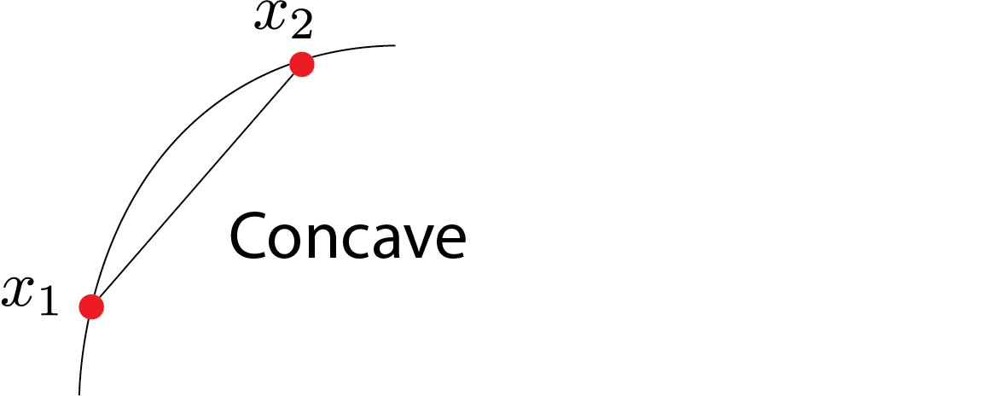
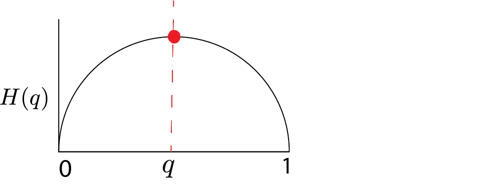
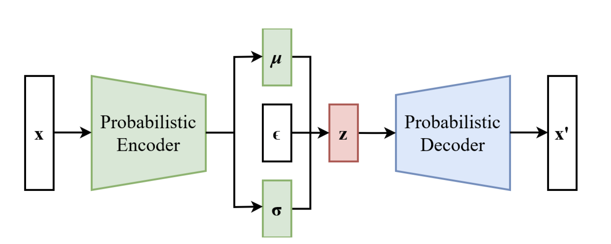

Variational Inference and VAE
In the previous post, we talked about approximation inference. We want to compute $p(\theta,z|x)$, but it’s too complicated. One strategy is to approximate as $q(\theta,z)$ that has an excellent form where $q$ is a function of variational parameters optimized for each $x$. $q$ is a function of variational parameters optimized for each $x$. Maximize a lower bound on $p(x)$ to choose $q$.
Remember the Bayes’ rule:
$$ p(\theta | x) = \frac{p(\theta)p(x|\theta)}{p(x)} $$
$p(x)$ is called evidence. Remember, in the Gaussian process, regression, etc., we played with some parameters and chose subjectively. The other approach is empirical Bayes to choose those parameters to maximize the evidence. This is a standard way of choosing the parameters. We are bound $p(x)$ in terms of $q_x(z,\theta)$. The indicator $x$ means we are doing this for each $x$. So we are gonna get a lower bound on $p(x)$ or lower bound on $\log p(x)$:
$$ \begin{aligned} \log p(x) = & \log \sum_{\alpha} w_{\alpha} \frac{p(x)}{w_{\alpha}} \\ \geq & \sum_{\alpha} w_{\alpha} \log \frac{p(x)}{w_{\alpha}} \end{aligned} $$
A logarithm is concave.

In our typical example, $\theta$ is continuous, and $z$ is discrete.
Altogether, the evidence lower bound (ELBO) is the following lower bound on $\log p(x)$:
$$ \begin{aligned} \log p(x) = & \int \sum_z q(z,\theta) \log p(x) d \theta \\ =& \sum_z \int q(z,\theta) \log \Big ( \frac{ p(x,z,\theta)q(z,\theta)}{p(z,\theta|x)q(z,\theta)}\Big) d \theta \\ =& \sum_z \int q(z,\theta) \log \Big ( \frac{ p(x,z,\theta)}{q(z,\theta)}\Big) d \theta + \sum_z \int q(z,\theta) \log \Big ( \frac{q(z,\theta)}{p(z,\theta|x)}\Big) d \theta \\ \geq & \sum_z \int q(z,\theta) \log \Big ( \frac{ p(x,z,\theta)}{q(z,\theta)}\Big) d \theta \\ = & H(q) + \mathbb{E}_q(\log p(x,z,\theta)) \end{aligned} $$
We used the fact that
$$ \sum_z \int q(z,\theta) \log \Big ( \frac{q(z,\theta)}{p(z,\theta|x)}\Big) d \theta $$
Is non-negative. This term is called KL-divergence. $ H(q) $ is entropy and $\mathbb{E}_q(\log p(x,z,\theta))$ is cross-entropy. We will maximize the sum of these two concerning parameters of $q$.
Example 1:
Let’s say we have a binary random variable with mean $\mu$. $$ H(\mu) = -\mu \log \mu -(1-\mu) \log (1-\mu) $$
It’s maximized when there is the most significant uncertainty or uniformity in the parameter $\theta$ or $\mu$. This prevents overfitting and helps our inference not to be very special.

The second term $\mathbb{E}_q(\log p(x,z,\theta))$ is trying to align $q$ and $p$ while keeping the entropy large that’s going to spread out the $q$ distribution. This is a general receipt, and we have yet to discuss how you should choose $q$. If we choose $q$ to be true posterior, we will get a good lower bound, but I can’t compute with it. I want some $q$ that is easy to compute and flexible enough to give us a good lower bound.
Example 2: A finite mixture model
Fix two distributions $F_0$ and $F_1$: $$ \begin{align} \theta \sim \text{Beta}(\alpha,\beta) \\ X| \theta \sim \theta F_1 +(1-\theta)F_0 \end{align} $$
the likelihood for the data $x_1,..,x_n$ is: $$ p(x_{1:n}) =\int_0^1 \text{Beta}(\theta|\alpha,\beta) \prod_{i=1}^n(\theta f_1(x_i)+(1-\theta)f_0(x_i))d\theta $$
We aim to approximate the posterior $p(\theta|x_{1:n})$ using a variational algorithm. Our variational approximation is:
$$ q(z,\theta) = q(\theta| \gamma_1,\gamma_2) \prod_{i=1}^n q_i^{z_i} (1-q_i)^{1-z_i} $$
where $q(\theta| \gamma_1,\gamma_2)$ is a $\text{Beta}(\gamma_1,\gamma_2)$ distribution and $0 \leq q_i \leq 1$ are $n$ free parameters. As we talked about earlier we need to maximize the following: $$ \text{ELBO: }H(q)+\mathbb{E}_q \log p$$.
First, we have: $$ \log p(x,\theta,z) = \log p(\theta|\alpha,\beta) + \sum_{i=1}^n \{ \log (\theta^{z_i}f_1(x_i))+ \log (\theta^{1-z_i}f_0(x_i))\} $$
Next, we use identities such as:
$$ \mathbb{E}_q \log \theta = \psi(\gamma_1) - \psi(\gamma_1+\gamma_2) $$
for the digamma function $\psi(.)$.
Overall, how many parameters do we have here? $n+2$: one for each data point and two $\gamma$s which are parameterizing the Beta distribution.
Variational Inference
Iterate the following steps for variational parameters $q_{1:n}$ and $(\gamma_1, \gamma_2)$:
-
Holding $q_i$ fixed, set $\gamma = (\gamma_1,\gamma_2)$ to: $$ \gamma_1 = \alpha +\sum_{i=1}^n q_i , \gamma_2 = \beta + n - \sum_{i=1}^n q_i $$
-
Holding $\gamma_1$ and $\gamma_2$ fixed, set $q_i$ to:
$$ q_i = \frac{f_1(x_i)\exp \psi(\gamma_1)}{f_1(x_i)\exp \psi(\gamma_1) + f_0(x_i)\exp \psi(\gamma_2) } $$
After convergence, the approximate posterior distribution over $\theta$ is: $$ \hat{p}(\theta| x_{1:n}) = \text{Beta}(\theta|\gamma_1,\gamma_2) $$
very similar to Gibbs sampler where $\sum_{i=1}^n q_i$ is expected number of heads. Note that it’s not a single Beta distribution. It’s mixture of Beta distributions.
This is very close to the topic model. $$ \begin{align} \theta \sim \text{Dirichlet}(\alpha_1,..\alpha_k) \\ X|\theta \sim \theta_1 F_1 + …+ \theta_k F_k \end{align} $$
The likelihood for a single data point $x$ is:
$$ p(x) = \int \text{Dirichlet}(\theta|\alpha_1,..,\alpha_k) \Big( \sum_{j=1}^k \theta_jf_j(x)\Big) d\theta $$
after convergence we will pull out $q_i$s and $\gamma_1$ and $\gamma_2$.
Variational autoencoders
Variational autoencoders are generative models that are trained using variational inference. The “decoder” is a neural net generated from a latent variable. The “encoder” approximates the posterior distribution with another neural network trained using variational inference.
We will use multivariate Gaussian for our variational distribution. VAE aims to parametrize mean and variance using a second set of neural networks.
$$ \begin{align} z\sim & \text{Normal}(0,I_K) \\ x | Z = & G(Z) \end{align} $$
Where $I_K$ is the identity covariance matrix.
$G(z)$ is the generator network or decoder.
For example, use a 2-layer network:
$$ G(Z) = A_2 \text{ReLU}(A_1z+b_1) + b_2 $$
Let’s say $K=100$, and $X$ is in the $1000$ dimension, and we don’t have ReLU. Then $I_K$ will be rank deficient, and the data will be in $100$ dimensional subspace in $10,000$ dimensions but Gaussian in that subspace. This is useless to us since we will not get anything like images if we do that. So we need a non-linearity.
As $G(.)$ is nonlinear, the posterior distribution $p(z|x)$ is intractable. Solution: we will use variational inference:
$$ q(z|x) = \text{Normal}(\mu(x),\sigma^2(x)I_K) $$
where now $\mu_j(x)$ and $\sigma^2_j(x)$ are the variational parameters for $j=1,2,..,k$. Then we can compute ELBO.
But we are going to do it differently. We will have another (encoder) neural network:
$$ \mu(x) = B_2 \text{ReLU}(B_1(x)+d_1)+ d_2 $$
and similarly for $\log \sigma^2(x)$.
And then, we are going to train the second neural network using ELBO. And this second neural network is going to give me my variational approximation.

How to train?
- Decoder network $z\mapsto x$, weights $A,b$.
- Encoder network: $x\mapsto \mu(x)$, $\log \sigma^2(x)$, weights $B,d$
- Train both networks simultaneously to maximize the ELBO
- Decoder trained with $\mathbb{E}_q \log p(x,Z_s)$ over weights $A,b$
- Encoder trained with $H(q)+\mathbb{E}_q \log p(x,Z_s)$ over weights $B,d$
Law of large numbers
How can we estimate these gigantic probabilities? Solution: just sample from it many and many times.
Now, approximate $\mathbb{E}_q \log p(x,Z_s)$ by sampling:
$$ \mathbb{E}_q \log p(x,Z_s) \approx \frac{1}{N} \sum_s \log p(x,Z_s) $$
Problem: The parameters of the recognition network have disappeared!
Solution: Reparameterize the samples by $Z_i = \mu(x)+\sigma(x)\epsilon_i$ where $\epsilon_i = \text{Normal}(0,I_K)$.
Simple Example
Suppose $x|z\sim \text{Normal}(G(z),I)$ where generator network is: $$ G(z)=\text{ReLU}(Az+b) $$
then $-\log p(x|z)$ is:
$$ \frac{1}{2} ||x-\text{ReLU}(Az+b)||^2 $$
Suppose the approximate posterior is:
$$ q(z|x) = \text{Normal}(\mu(x),\sigma^2(x)I_K) $$
where encoder network is $\mu(x)=\text{ReLU}(Bx+d)$. Then,
$$ -\mathbb{E}_q \log p(x|Z) = \frac{1}{N} \sum_s ||x-\text{ReLU}(AZ_s+b)||^2 $$
$$ = \frac{1}{N} \sum_{s=1}^N \frac{1}{2}||x-\text{ReLU}(A(\text{ReLU}(Bx+d))+\epsilon_s \sigma(x)+b)||^2 $$
We covered this post in the intermediate machine learning SDS 365/565, Yale University, John Lafferty, where I was TF.